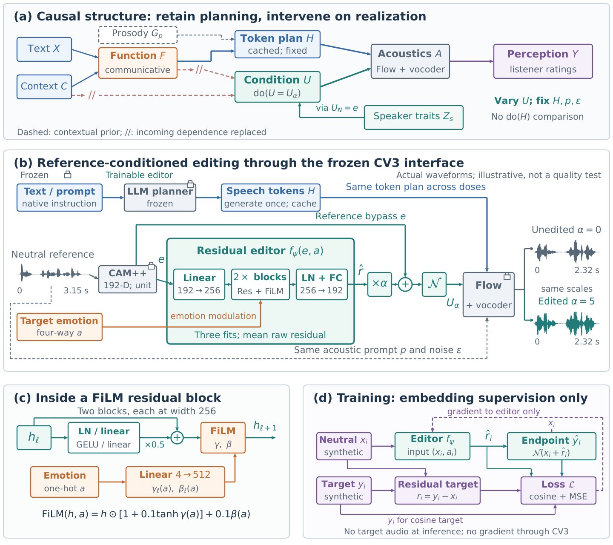
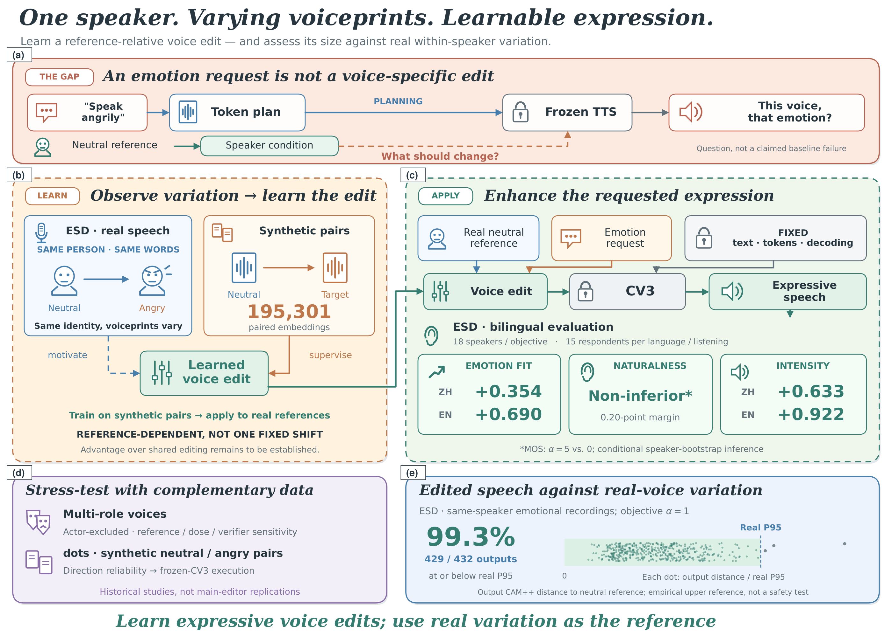

The editor takes a reference speaker embedding (192-d) and the requested emotion as input, and predicts a residual edit through lightweight FiLM blocks. A scalar α scales the predicted residual before it is added to the reference embedding and re-normalized. The edited condition then drives the frozen CosyVoice 3 synthesizer through its native acoustic interface — the planner and the Flow decoder remain unchanged, and no gradient passes through the synthesizer. At inference, no target-emotion recording of the speaker is required.


Frozen CosyVoice 3 with the native emotion instruction active. For each case, Unedited (α=0) uses the original speaker embedding; Ours adds the predicted reference-conditioned residual at increasing strength (α=1.5, 3, 5). The Reference is a real neutral recording of the same speaker, used only as the anchor for naturalness and identity — the editor never sees an emotional recording of the speaker, and speech tokens and decoding are held fixed across all versions of a case. Cases are the top-rated examples from the 16-listener bilingual MOS study; per-case human ratings at α=5 are shown under each text (1–5 scale).
| Case | Reference GT neutral |
Unedited α = 0 |
Ours α = 1.5 |
Ours α = 3 |
Ours α = 5 |
|---|---|---|---|---|---|
😊 Happy
所以你必须要坚持，时间越长越好。
Speaker 2 (Chinese) Human MOS at α=5 (n=6): Emotion 4.50 · Naturalness 4.00 · Intensity 4.17 · Similarity 3.83 · ΔEmotion vs unedited +1.00 |
|||||
😢 Sad
拜托，别跟我提到笔记本电脑。
Speaker 2 (Chinese) Human MOS at α=5 (n=4): Emotion 4.75 · Naturalness 4.50 · Intensity 4.50 · Similarity 4.50 · ΔEmotion vs unedited +0.75 |
|||||
😲 Surprised
这是台湾地区最大的动物园。
Speaker 2 (Chinese) Human MOS at α=5 (n=6): Emotion 4.33 · Naturalness 4.17 · Intensity 4.33 · Similarity 4.50 · ΔEmotion vs unedited +0.83 |
|||||
😠 Angry
我不会牺牲我的健康来换取金钱的。
Speaker 8 (Chinese) Human MOS at α=5 (n=4): Emotion 4.50 · Naturalness 4.50 · Intensity 4.75 · Similarity 4.75 · ΔEmotion vs unedited +1.50 |
|||||
😠 Angry
five hundred and one million. right.
Speaker 13 (English) Human MOS at α=5 (n=3): Emotion 4.67 · Naturalness 4.67 · Intensity 4.67 · Similarity 4.67 · ΔEmotion vs unedited +0.33 |
|||||
😊 Happy
the elephant and the carpenter is the longest.
Speaker 14 (English) Human MOS at α=5 (n=3): Emotion 4.67 · Naturalness 4.67 · Intensity 4.67 · Similarity 4.67 · ΔEmotion vs unedited +0.33 |
|||||
😲 Surprised
well, anyhow, it didn't rain. he said.
Speaker 16 (English) Human MOS at α=5 (n=3): Emotion 4.67 · Naturalness 4.67 · Intensity 5.00 · Similarity 4.67 · ΔEmotion vs unedited +0.67 |
|||||
😢 Sad
dear customer, welcome to our ship.
Speaker 17 (English) Human MOS at α=5 (n=3): Emotion 4.67 · Naturalness 4.33 · Intensity 4.67 · Similarity 5.00 · ΔEmotion vs unedited +0.67 |